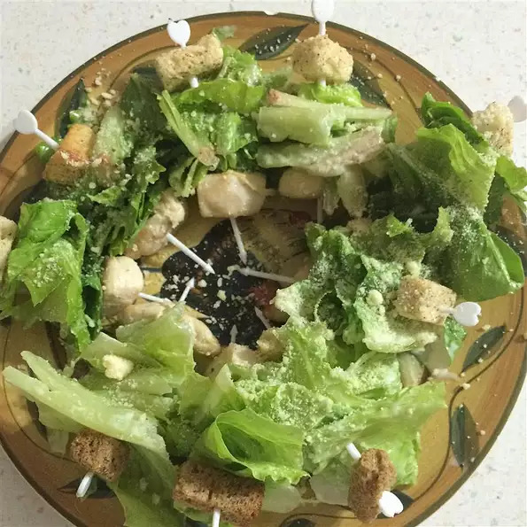

Chicken Caesar Salad on a Stick

Description
This chicken Caesar-on-a-stick appetizer is a fun twist on a classic salad!
ingredients
- 8 croutons
- 8 (1-inch) wedges romaine lettuce
- 8 (1 ounce) cubes cooked chicken
- 8 (1/2-inch) cubes Parmesan cheese, or to taste
- 8 bamboo toothpicks
- 8 teaspoons Caesar salad dressing
Steps
- Cook the Chicken on a casserole with olive oil
- Slice the lettuce into medium pieces
- Thread a crouton, romaine lettuce wedge, chicken cube, and Parmesan cheese cube onto each toothpick, respectively.
- toothpicks on a serving platter and drizzle Caesar salad dressing over each.
Reference